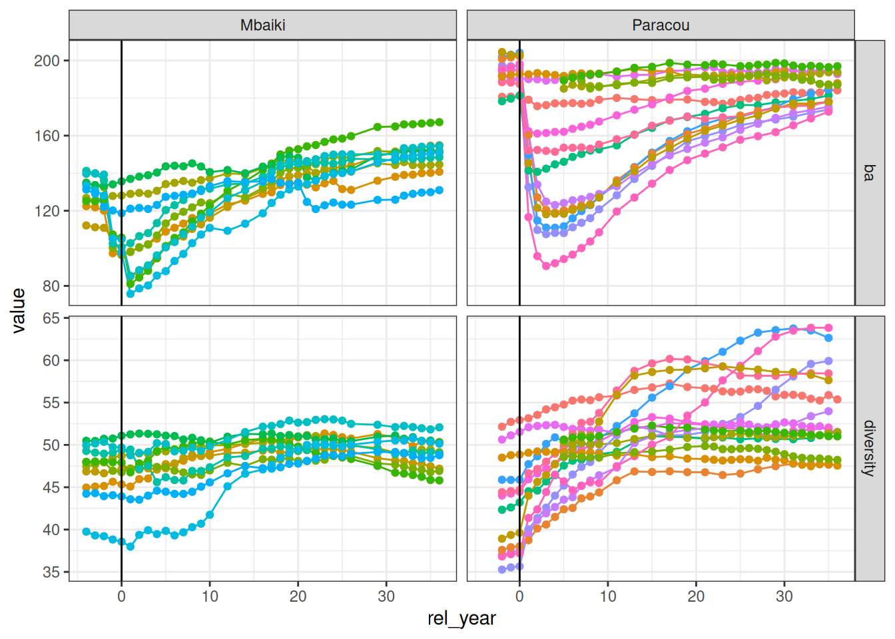

Code
library(tidyverse)
library(entropart)
library(cmdstanr)library(tidyverse)
library(entropart)
library(cmdstanr)diversity <- c("data/raw_data/data_cleaned_paracou.csv",
"data/raw_data/data_cleaned_mbaiki.csv") %>%
read_csv() %>%
subset(!is.na(genus_cleaned)) %>%
group_by(Site, Plot, Year, genus_cleaned) %>%
summarise(count = n(), .groups = "drop") %>%
group_by(Site, Plot, Year) %>%
summarise(
diversity = Diversity(count,
q = 1, SampleCoverage = 0.9,
Correction = "None")
)
ba <- c("data/raw_data/data_cleaned_paracou.csv",
"data/raw_data/data_cleaned_mbaiki.csv") %>%
read_csv() %>%
group_by(Site, Plot, Year) %>%
summarise(ba = sum(pi*(diameter_cor/200)^2))
forest <- left_join(diversity, ba) %>%
rename_all(tolower) %>%
ungroup() %>%
mutate(rel_year = year - 1986) %>%
mutate(sitenum = as.numeric(as.factor(site))) %>%
mutate(plot = as.character(plot)) %>%
left_join(read_tsv("data/raw_data/metadata.tsv"))
data_equ <- forest %>%
filter((rel_year <= 0 & treatment == "Logging") | treatment == "Control") %>%
mutate(plotnum = as.numeric(as.factor(paste(site, plot))))
ind_equ <- data_equ %>%
select(site, plot, sitenum, plotnum) %>%
unique()
data_rec <- forest %>%
filter(treatment == "Logging", rel_year > 2) %>%
mutate(plotnum = as.numeric(as.factor(paste0(site, "_", plot))))
ind_rec <- data_rec %>%
select(site, plot, sitenum, plotnum) %>%
unique()forest %>%
select(site, plot, rel_year, ba, diversity) %>%
gather(variable, value, -site, -plot, -rel_year) %>%
ggplot(aes(rel_year, value, col = plot)) +
geom_line() +
geom_point() +
facet_grid(variable ~ site, scales = "free_y") +
theme_bw() +
scale_color_discrete(guide = "none") +
geom_vline(xintercept = 0)
equilibirum <- cmdstan_model("models/equilibirum.stan")
mdata <- list(
n_obs = nrow(data_equ),
n_site = max(data_equ$sitenum),
n_plot = max(data_equ$plotnum),
ba = data_equ$ba,
y = data_equ$diversity,
site = data_equ$sitenum,
plot = data_equ$plotnum
)
fit <- equilibirum$sample(
mdata,
chains = 4,
parallel_chains = 4,
save_warmup = FALSE,
refresh = 100,
output_dir = "chains/equ/"
)fit <- as_cmdstan_fit(list.files("chains/equ/", full.names = TRUE))
mu <- fit$summary(c("mu", "muba")) %>%
separate(variable, c("variable", "sitenum"), convert = TRUE) %>%
mutate(variable = recode(variable, "mu" = "diversity", "muba" = "ba")) %>%
left_join(ind_equ %>% distinct(sitenum, site))
knitr::kable(mu)| variable | sitenum | mean | median | sd | mad | q5 | q95 | rhat | ess_bulk | ess_tail | site |
|---|---|---|---|---|---|---|---|---|---|---|---|
| diversity | 1 | 47.22631 | 47.24360 | 1.756616 | 1.737830 | 44.38557 | 50.14199 | 1.001916 | 925.5952 | 1387.541 | Mbaiki |
| diversity | 2 | 44.73192 | 44.73815 | 1.488167 | 1.517070 | 42.30202 | 47.10864 | 1.004342 | 729.2118 | 1065.679 | Paracou |
| ba | 1 | 123.72451 | 123.82850 | 3.039146 | 2.817681 | 118.46440 | 128.53070 | 1.001721 | 1122.5074 | 1318.239 | Mbaiki |
| ba | 2 | 192.84774 | 192.86550 | 2.418709 | 2.411449 | 188.83170 | 196.87070 | 1.000804 | 1005.2742 | 1750.113 | Paracou |
recovery <- cmdstan_model("models/recovery.stan")
mdata <- list(
n = nrow(data_rec),
s = max(data_rec$sitenum),
p = max(data_rec$plotnum),
ba = data_rec$ba,
y = data_rec$diversity,
t = data_rec$rel_year - 3,
site = data_rec$sitenum,
plot = data_rec$plotnum,
site_plot = ind_rec$sitenum,
mu_ba_theta_s = filter(mu, variable == "ba")$median,
sigma_ba_theta_s = filter(mu, variable == "ba")$sd,
mu_theta_s = filter(mu, variable == "diversity")$median,
sigma_theta_s = filter(mu, variable == "diversity")$sd
)
fit <- recovery$sample(
mdata,
chains = 4,
parallel_chains = 4,
save_warmup = FALSE,
refresh = 100,
output_dir = "chains/rec/"
)fit <- as_cmdstan_fit(list.files("chains/rec/", full.names = TRUE))
fit$time() %>%
knitr::kable()
|
|
gamma <- fit$summary("gamma_s")
knitr::kable(gamma)| variable | mean | median | sd | mad | q5 | q95 | rhat | ess_bulk | ess_tail |
|---|---|---|---|---|---|---|---|---|---|
| gamma_s[1] | -0.2562655 | -0.2811835 | 0.6448763 | 0.5851867 | -1.343583 | 0.7340255 | 1.130108 | 24.42913 | 45.16251 |
| gamma_s[2] | -2.8909328 | -3.0275900 | 0.8027662 | 0.8369277 | -3.904796 | -1.4752615 | 1.007041 | 743.82430 | 1231.33836 |